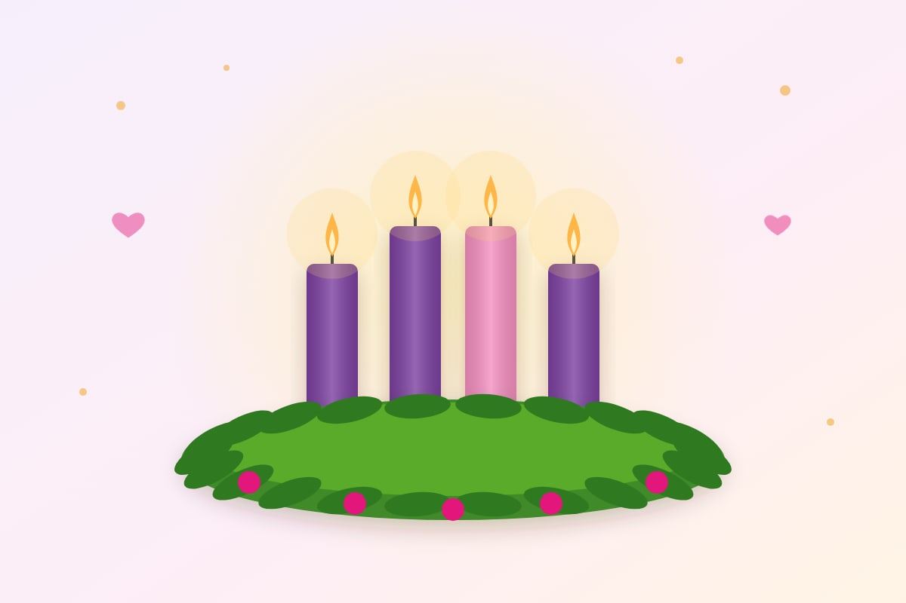

Espiritualidade
Gratidão: o que é, benefícios e como praticar no dia a dia
Por Equipe Instituto AMA · Publicado em
“Obrigado” é uma das primeiras palavras que aprendemos e, ao mesmo tempo, uma das que mais esquecemos de dizer. A correria, as preocupações e as comparações com a vida dos outros fazem a gente reparar mais no que falta do que no que já tem. A gratidão é o movimento contrário: parar, olhar em volta e reconhecer o bem que recebemos.
Nesta matéria você vai entender o que é gratidão, o que a ciência descobriu sobre seus benefícios, como ela aparece nas religiões e práticas simples para viver a gratidão no dia a dia, sozinho ou em família.
O que é gratidão?
Gratidão é reconhecer que algo de bom aconteceu na nossa vida e que esse bem, muitas vezes, veio de fora de nós: de outra pessoa, da natureza, de Deus. Não é só educação ou um “obrigado” automático. É um sentimento que nasce quando percebemos que não fizemos tudo sozinhos.
Ser grato também não significa fingir que está tudo bem. Quem passa por dificuldades pode sentir tristeza e, ainda assim, notar o apoio de um amigo, o prato de comida na mesa ou um dia de saúde. A gratidão não apaga a dor; ela amplia o olhar.
O que dizem as pesquisas
A gratidão é um dos temas mais estudados da chamada psicologia positiva, a área que investiga o que faz as pessoas viverem bem. Dois estudos ficaram famosos:
- O diário de gratidão (Emmons e McCullough, 2003): os psicólogos Robert Emmons e Michael McCullough dividiram voluntários em grupos. Um deles anotava, uma vez por semana, até cinco coisas pelas quais era grato; os outros anotavam aborrecimentos ou fatos comuns da semana. Ao longo de nove semanas de acompanhamento, quem registrava gratidão avaliava a vida de forma mais positiva, estava mais otimista com a semana seguinte, relatou menos sintomas físicos e passou quase 1 hora e meia a mais por semana fazendo exercícios do que o grupo dos aborrecimentos.
- Em pessoas com doença crônica: no mesmo trabalho, adultos com doenças neuromusculares que fizeram o exercício de gratidão diariamente relataram mais horas de sono, acordavam mais descansados e se sentiam mais otimistas e mais ligados às outras pessoas do que o grupo de comparação.
- A carta de gratidão (Seligman e colegas, 2005): a equipe do psicólogo Martin Seligman testou vários exercícios. O que mais aumentou a felicidade no curto prazo foi escrever e entregar pessoalmente uma carta de agradecimento a alguém que tinha ajudado muito o participante. O efeito apareceu ainda um mês depois, mas foi diminuindo com o tempo. Ou seja: a gratidão funciona melhor como hábito do que como gesto isolado.
Esses estudos não dizem que a gratidão cura doenças nem substitui tratamento médico ou psicológico. Eles mostram que treinar o olhar para o que é bom faz diferença no humor, nos relacionamentos e no cuidado com a própria saúde. Se você enfrenta ansiedade ou tristeza persistente, procure também ajuda profissional.
Como praticar a gratidão no dia a dia
- Diário de gratidão: uma ou algumas vezes por semana, anote de três a cinco coisas pelas quais você é grato. Seja específico: em vez de “minha família”, escreva “o café que minha filha preparou hoje”. Coisas pequenas contam.
- Carta de gratidão: pense em alguém que fez diferença na sua vida e a quem você nunca agradeceu de verdade. Escreva contando o que essa pessoa fez e como isso mudou você. Se puder, leia a carta para ela pessoalmente; se morar longe, use uma ligação ou chamada de vídeo.
- Oração de agradecimento: muita gente só reza para pedir. Experimente dedicar alguns minutos, antes de dormir, apenas para agradecer pelo dia, inclusive pelas lições dos momentos difíceis. Se quiser inspiração, veja as principais orações espíritas.
- Agradeça em voz alta: diga obrigado olhando nos olhos ao porteiro, ao motorista, ao atendente, ao colega de trabalho. Elogie o que foi bem feito.
- Pausa da gratidão: escolha um momento fixo do dia, como uma refeição, para lembrar de uma coisa boa que aconteceu.
- Transforme gratidão em ação: quem reconhece o quanto recebeu costuma sentir vontade de retribuir. Ajudar alguém, doar ou fazer trabalho voluntário é uma forma concreta de agradecer.
Gratidão em família
Crianças aprendem gratidão muito mais pelo exemplo do que pelo sermão. Algumas ideias simples:
- Pergunta do jantar: cada um conta qual foi a melhor parte do dia.
- Pote da gratidão: a família escreve em papeizinhos coisas boas que aconteceram e coloca num pote. No fim do ano, vocês leem juntos.
- Bilhetes de agradecimento: incentive as crianças a desenhar ou escrever um obrigado para avós, professores e amigos.
- Momento de prece: reserve um momento semanal para orar e agradecer juntos. O Evangelho no Lar é uma ótima forma de criar esse hábito.
Em tudo dai graças, porque esta é a vontade de Deus em Cristo Jesus para convosco.
A gratidão nas religiões
Praticamente todas as tradições religiosas colocam o agradecimento a Deus no centro da vida espiritual. No cristianismo, a própria palavra “eucaristia” vem do grego e significa “ação de graças”. Os Salmos convidam a louvar e agradecer, e no judaísmo existem bênçãos de agradecimento para os momentos mais simples do dia, como acordar e comer. No islamismo, a expressão “Alhamdulillah” (“louvado seja Deus”) acompanha o dia a dia dos fiéis.
Para o Espiritismo, a prece não serve só para pedir. O Evangelho segundo o Espiritismo, de Allan Kardec, traz no capítulo XXVIII uma coletânea de preces que inclui preces de ação de graças, como a de agradecimento por um favor obtido e por ter escapado de um perigo. A ideia é que reconhecer o bem recebido eleva o pensamento e nos aproxima de Deus. A gratidão também ajuda a aceitar as provas da vida com mais serenidade, entendendo que cada experiência traz algo para nosso crescimento. Saiba mais em Espiritualidade é a busca por sentido.
Gratidão e o fim de ano
Novembro e dezembro são meses de balanço. Antes de fazer a lista do que você quer conquistar no próximo ano, que tal fazer a lista do que você agradece neste? Olhar para as pessoas, aprendizados e conquistas de 2026 ajuda a começar o novo ciclo com mais leveza e menos cobrança. Depois, veja como transformar seus planos em metas para o ano novo que você realmente cumpre.
Curiosidade: nos Estados Unidos, o Dia de Ação de Graças (Thanksgiving) é celebrado na quarta quinta-feira de novembro, com a família reunida em torno da mesa. Poucos sabem que o Brasil também tem um Dia Nacional de Ação de Graças, criado pela Lei nº 781, de 1949. Desde 1966, ele cai na quarta quinta-feira de novembro, que em 2026 é o dia 26. A data não é feriado, mas pode ser um bom lembrete para agradecer.
Perguntas frequentes
O que é gratidão?
Gratidão é reconhecer o bem que recebemos, de outras pessoas, da vida ou de Deus, e valorizar isso. É mais do que dizer obrigado: é perceber que não fazemos nada sozinhos.
Quais são os benefícios da gratidão?
Pesquisas de psicologia positiva, como as de Robert Emmons e Michael McCullough, indicam que praticar a gratidão está ligado a uma visão mais positiva da vida, mais otimismo, menos queixas físicas e melhor sono. Ela não substitui tratamento médico ou psicológico.
Como fazer um diário de gratidão?
Uma ou algumas vezes por semana, anote de três a cinco coisas pelas quais você é grato, de forma específica. Não precisa ser nada grandioso: um gesto de carinho ou um momento de paz já contam.
Como ensinar gratidão para as crianças?
Pelo exemplo: agradeça na frente delas, crie o hábito de contar a melhor parte do dia no jantar, faça um pote da gratidão e incentive bilhetes de agradecimento para quem cuida delas.
Quando é o Dia de Ação de Graças?
É na quarta quinta-feira de novembro, tanto nos Estados Unidos quanto no Dia Nacional de Ação de Graças brasileiro. Em 2026, a data cai em 26 de novembro.
Fontes e leitura recomendada
- Emmons e McCullough (2003), Counting blessings versus burdens – Journal of Personality and Social Psychology (PDF, Greater Good/UC Berkeley)
- Carta de gratidão e o estudo de Seligman et al. (2005) – Greater Good in Action, UC Berkeley
- O Evangelho segundo o Espiritismo, de Allan Kardec – Kardecpédia
- Lei nº 781/1949 – institui o Dia Nacional de Ação de Graças – Câmara dos Deputados
- Lei nº 5.110/1966 – Dia Nacional de Ação de Graças na quarta quinta-feira de novembro – Planalto
Leia também

Advento: o que é, coroa, velas e como viver as semanas antes do Natal
O significado do Advento e da coroa com quatro velas, as datas de 2026 e ideias para viver esse tempo de preparação em família.
Ler matériaEvangelho no Lar: o que é, como fazer e com que frequência
A importância de orar e estudar o Evangelho em família, o passo a passo, a periodicidade e como outras religiões cultivam a fé no lar.
Ler matériaTodas as religiões levam ao bem: amor, caridade e evolução
Muitos caminhos, um mesmo princípio: amar o próximo, praticar a caridade e evoluir a cada dia.
Ler matériaGostou desta matéria? Veja outras no blog, conheça nossas referências ou fale com a gente.